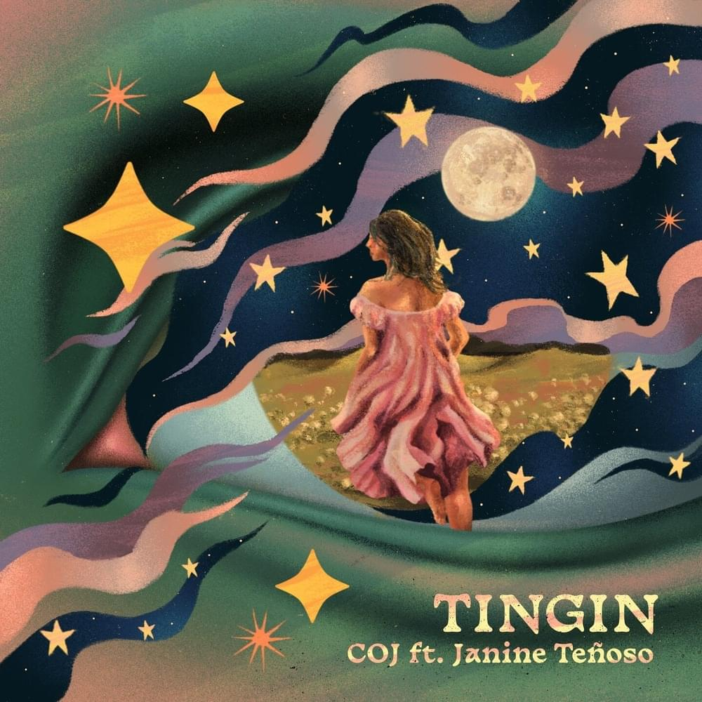

The song "Tingin" by Cup of Joe featuring Janine Teñoso is about a strong attraction towards someone and the desire to focus solely on them amidst a chaotic world. The song depicts the feeling of being captivated by someone's gaze and entranced by their presence, while everything else fades into the background.
